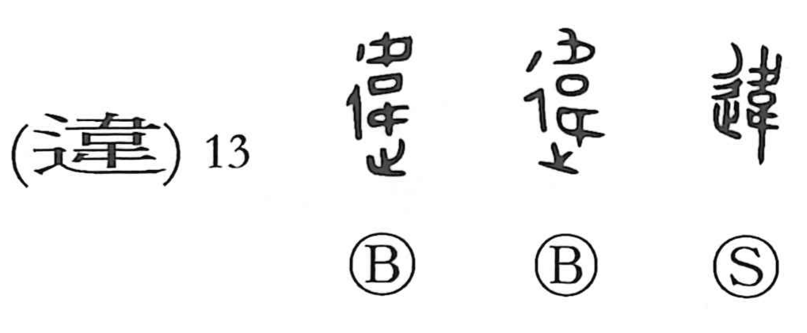

違

Kun: chigau, chigaeru, tagau, tagaeru | On: i
to differ ・ to go against ・ to violate ・ to contradict
Explanation
違 is a phono-semantic character. Its phonetic core is 韋, which Shirakawa interprets as footprints (止) placed above and below an enclosing wall, turning left and right as they move. This image suggests running around or encircling, and, because the directions above and below are opposed, it also implies divergence. With 辵 (辶), the element of going or walking, added as the semantic, the whole character comes to depict movement that swerves from the usual path. From this it developed meanings such as going around or circulating, and then differing, being at variance, breaking with, contradicting, or disobeying what is prescribed.